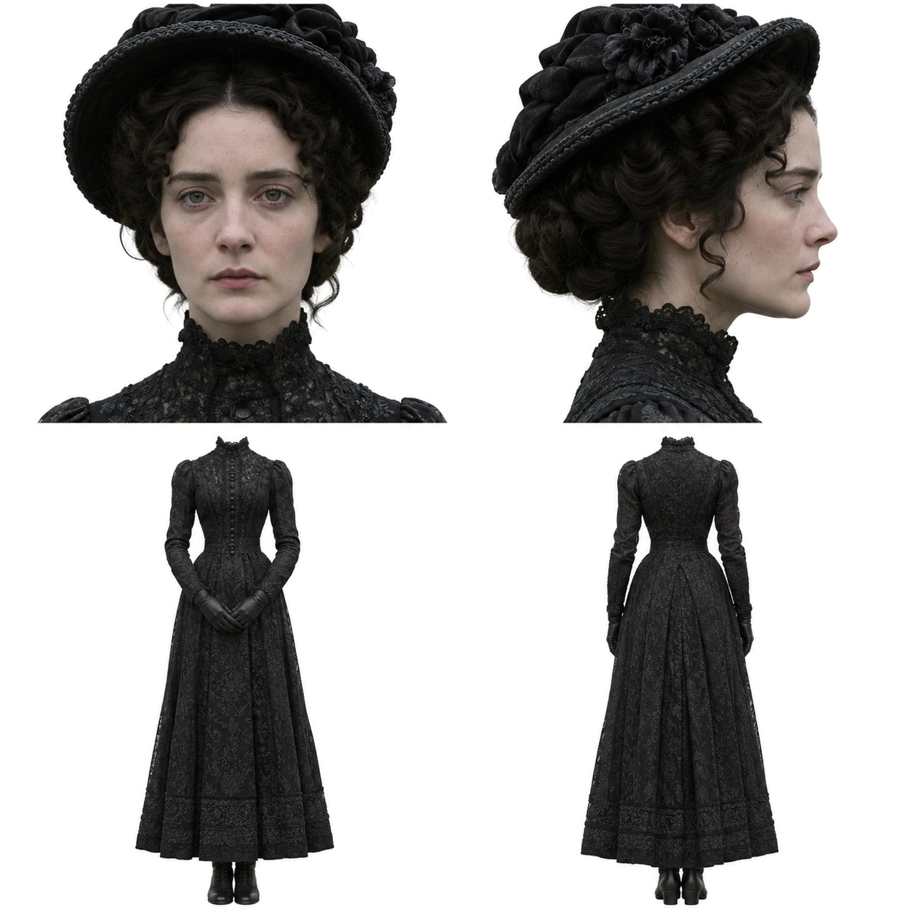
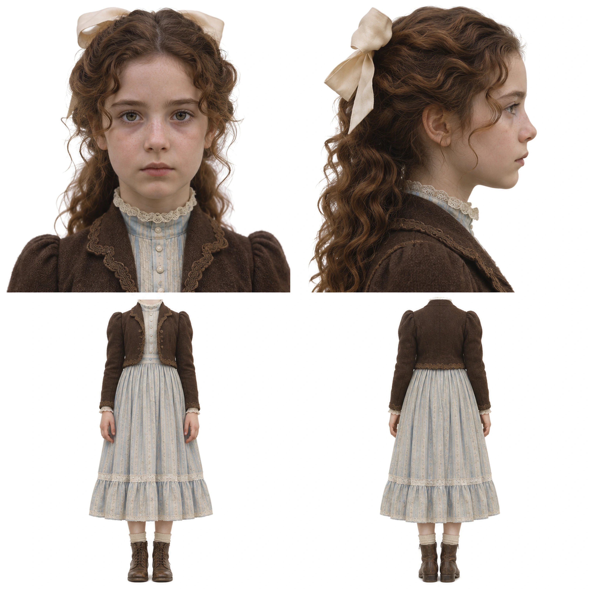
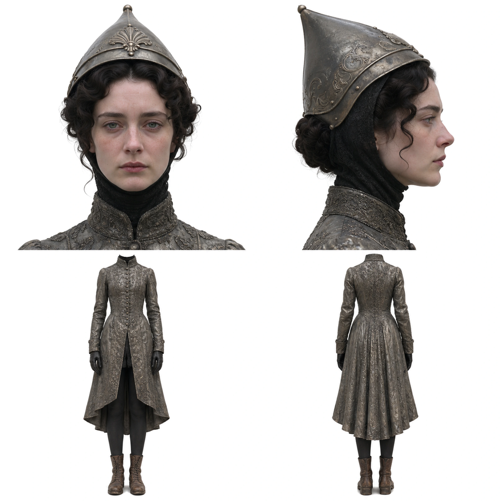
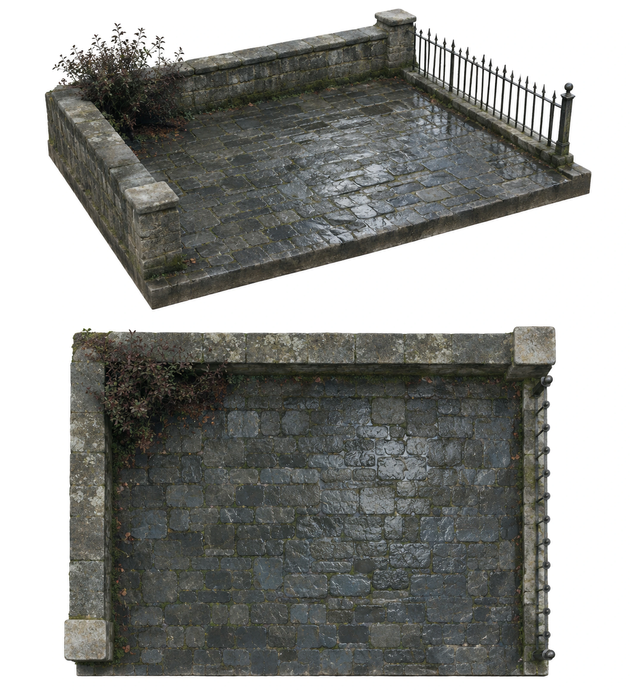
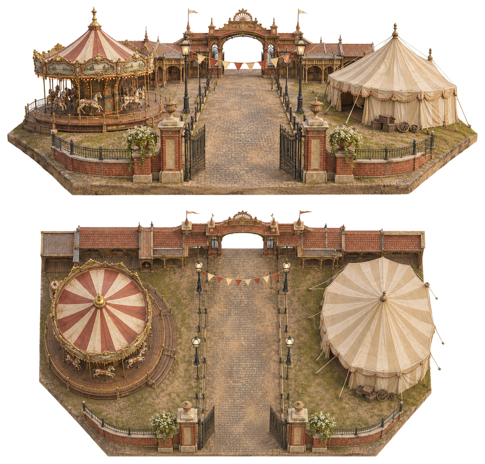
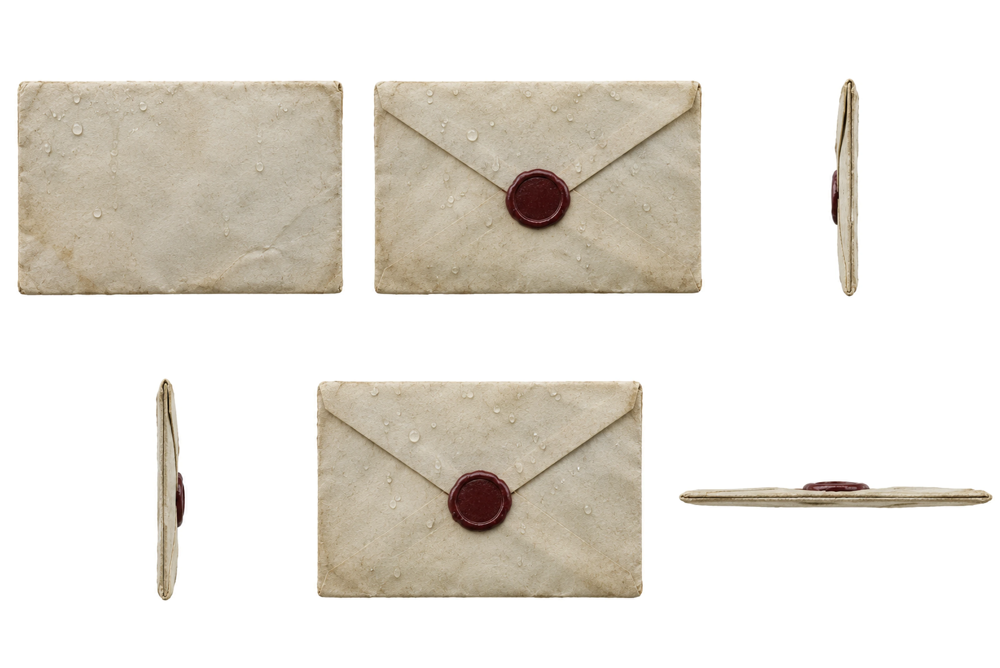
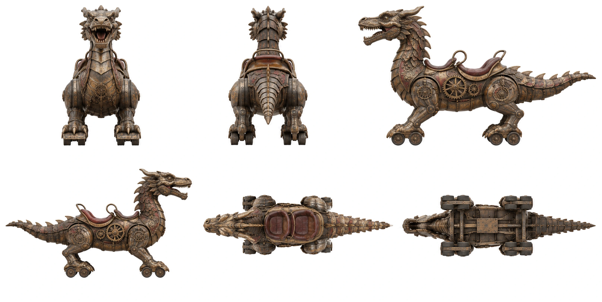
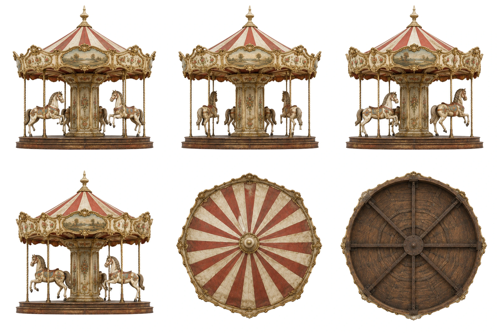

影视互动
影视互动
正在连接在线视频…
视频简介
成年埃尔维拉在雨中读到带红蜡封的信，进入父亲在游乐园送给她机械小象的记忆。互动问题三次回到同一起点，依次演示机械龙、轨道小车和火箭乘骑三种答案。三条回忆汇入成年人的眼泪，眼睛里保留机械小象和暖色光影。
在快手观看原视频 ↗制作资产
角色资产

成年埃尔维拉
在雨中读信的成年女子，进入三段同一童年的不同记忆选项。 黑色爱德华时期蕾丝高领裙、卷发大帽、黑手套。开场止住情绪，片尾落泪。 成片未完整展示的方位按可见造型补全。

童年埃尔维拉
童年版本，在游乐园从父亲手中接过机械小象。 栗卷发和浅发饰。入口加棕短外套，乘骑段露出浅色高领裙。 成片未完整展示的方位按可见造型补全。
埃尔维拉父亲
在记忆中蹲下给孩子礼物，随后陪同乘骑。 卷袖白衫、棕色背心、深色领带；乘骑段戴眼镜。 成片未完整展示的方位按可见造型补全。

银衣游乐园演员
机械龙经过时站在两侧庆祝的演员，供同装造型群演复用。 暗银金属质演出外套与尖头罩，抛纸花时动作外放。 成片未完整展示的方位按可见造型补全。
场景资产

雨中暗色户外
雨中暗色户外的场景视觉设定，用于空间布局、光影与镜头背景。

复古游乐园入口
复古游乐园入口的场景视觉设定，用于空间布局、光影与镜头背景。
游乐园乘骑大道
游乐园乘骑大道的场景视觉设定，用于空间布局、光影与镜头背景。
道具资产

红蜡封信
象牙纸信封，三角襟、素红蜡封、少量雨点。 从黑手套之间展示；寄语的原片字样作为对白信息，资产中去字。 成片未完整展示的方位按可见造型补全。
机械小象
掌心大暗铜象，举鼻、圆雕机械纹。 父亲送礼和各分支的重复识别点。 成片未完整展示的方位按可见造型补全。

机械龙乘骑
长尾仿齿轮龙，双人鞍位及轮组。 分支 A 的人龙乐园纪念场面，龙道具单独合成人物。 成片未完整展示的方位按可见造型补全。
蒸汽轨道小车
棕木、铜边、双座和方向盘。 分支 B 小车正向行驶，蒸汽另层处理。 成片未完整展示的方位按可见造型补全。
复古火箭座舱
青铜色仿火箭主体、圆窗、双座，侧面装饰铆点。 分支 C 的近景主乘具，航行效果由背景运动提供。 成片未完整展示的方位按可见造型补全。

木马转盘
金边圆木台、条纹顶棚、固定木马。 入口和乘骑大道的地标，在各分支用同一摆放。 成片未完整展示的方位按可见造型补全。
剧本与分镜
完整剧本与分镜脚本
影视互动 · 影视互动 原片时长 63.20 秒 故事梗概 成年埃尔维拉在雨中读到带红蜡封的信，进入父亲在游乐园送给她机械小象的记忆。互动问题三次回到同一起点，依次演示机械龙、轨道小车和火箭乘骑三种答案。三条回忆汇入成年人的眼泪，眼睛里保留机械小象和暖色光影。 人物 埃尔维拉有成人与童年两套造型。父亲是分支共有的角色。银衣演员在机械龙分支左右迎接。 场景 雨中暗色户外负责当下。游乐园入口为互动选择和交礼共享空间。乘骑大道通过更换同轨道的乘具承载三个选项。 道具用途 红蜡封信触发回忆，机械小象跨分支重复。龙、车、火箭分别作为 A、B、C 选项。转盘是游乐园常驻背景。 剧本与分镜 按原片抽帧重建的复拍制作稿。画面未能确认的对白、音效与镜头节奏按下表执行。 | 镜号 | 画面内容 | 镜头视角 | 使用资产 | 动作描述 | 台词/旁白 | 音效 | 单镜头时长 | | 01 | 雨滴落在红蜡封信上，女人低头 | 手部特写接正脸近景 | 红蜡封信、成年埃尔维拉、雨中暗色户外 | 黑手套扶住信封两边，她读完寄语 | 画外：给我最珍贵的时刻，也给我最亲爱的埃尔维拉。 | 雨点、纸响 | 6.70秒 | | 02 | 女人抬眼，色温切到暖色 | 眼部正面近景 | 成年埃尔维拉 | 停半拍后将视线移离信封 | — | 雨声拉远、游乐园音乐渐入 | 3.30秒 | | 03 | 父亲在游乐园入口等孩子 | 暖色入口中景 | 童年埃尔维拉、父亲、游乐园入口、木马转盘 | 孩子走向蹲下的父亲，出现互动问题 | 互动题：童年里，你印象最深的和父亲在游乐园的回忆是什么？ | 人群、转盘音乐 | 5.50秒 | | 04 | 机械小象落到孩子手边 | 交礼手部特写 | 机械小象、童年埃尔维拉、父亲 | 父亲托住小象，孩子伸手接过 | — | 金属轻触 | 2.50秒 | | 05 | 选项 A 展示两人骑机械龙 | 侧向跟拍全景 | 机械龙乘骑、父女、银衣演员、乘骑大道 | 双人乘龙经过，演员向两边撒出纸花 | A：骑机械龙。 | 齿轮、笑声、纸花 | 5.00秒 | | 06 | 重复入口提问，父女准备进入选项 B | 同机位重放转双人近景 | 父女、机械小象、游乐园入口 | 孩子停在前一位置，把礼物抱在身前 | 互动题重现，B：坐轨道小车。 | 提示音、风琴 | 7.50秒 | | 07 | 选项 B 小车载两人穿过蒸汽 | 小车正面宽景 | 蒸汽轨道小车、父女、乘骑大道 | 父亲握方向盘，孩子在旁张口欢呼 | — | 车轮、蒸汽喷声 | 6.00秒 | | 08 | 短切雨中成年的表情 | 成年埃尔维拉近景 | 成年埃尔维拉、雨中暗色户外 | 低头，眼神移到画面一侧 | — | 雨声回返 | 3.50秒 | | 09 | 入口第三次回放，交礼特写 | 中景切到掌心小象 | 父女、机械小象、游乐园入口 | 沿相同位置接回小象，保留第三个选项 | 互动题重现，C：坐复古火箭。 | 提示音、玩具触手 | 6.50秒 | | 10 | 选项 C 父女坐入火箭座舱 | 仰角前方双人中景 | 复古火箭座舱、父女、乘骑大道 | 孩子张开手，父亲向上指，两人一起笑 | — | 上升音、游乐园欢呼 | 6.00秒 | | 11 | 女人眼泪滑下 | 斜侧近景 | 成年埃尔维拉 | 她睁着眼安静落泪，脸上暖光回到间歇冷光 | — | 安静呼吸、雨 | 5.50秒 | | 12 | 眼中倒映小象和暖色光轮廓 | 眼睛极近景 | 机械小象、成年埃尔维拉 | 让象形倒影停住，片尾渐暗 | — | 余音和雨声渐弱 | 5.20秒 | 时长合计 63.20 秒